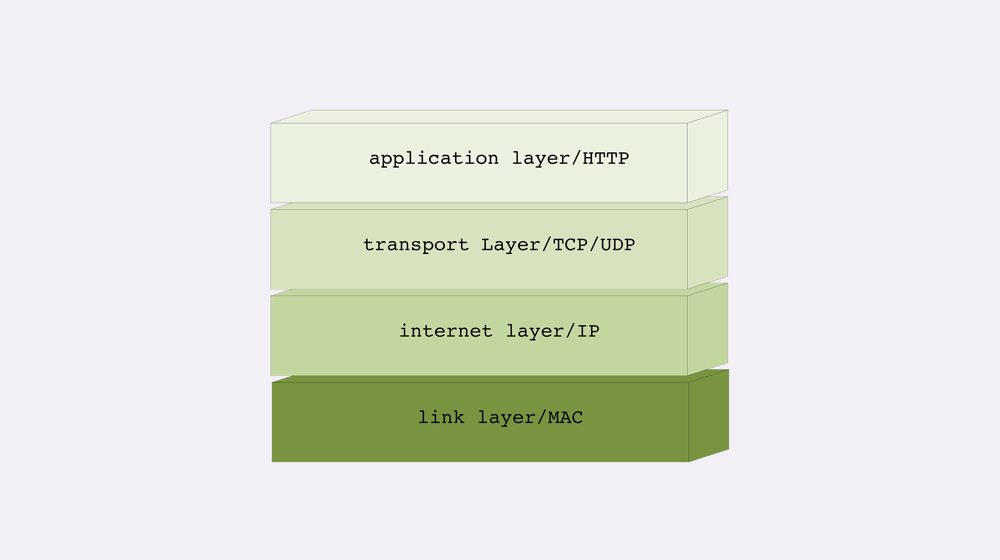
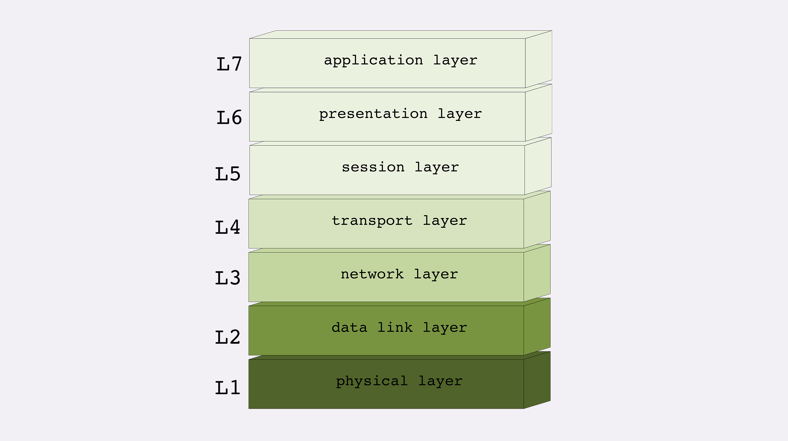
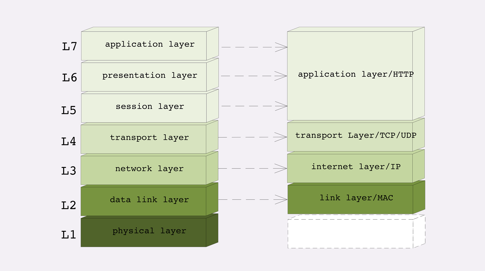

身为一个前端，HTTP 对我而言就像是云雾环绕的一座山，看不透也不知从哪开始攀登。深入学习 HTTP 协议系列就是我对罗剑锋老师的《透视 HTTP 协议》所做的总结。希望能对大家的登山之旅有所帮助。
HTTP 是什么
HTTP 协议是 Hyper Text Transfer Protocol（超文本传输协议）的缩写，是用来在 www 服务器和本地浏览器互相传输超文本的传送协议，超文本包括文字、图片、音频、视频等内容。
与 HTTP 相关的概念
HTTP 协议中的两点
一般浏览器是 HTTP 协议中的请求方，服务器是应答方。服务器这里有两个概念，一个是硬件指的是一台机器，另外一个是软件，指的是提供 web 服务的应用程序，运行在硬件服务器上。
CDN
CDN 全称是 “Content Delivery Network”，内容分发式网络，利用了 HTTP 协议里的缓存和代理技术，代替源站响应客户端的请求。
CDN 可以缓存源站数据，让浏览器请求更快的得到响应。
爬虫
模拟 HTTP 请求端，向服务端发送请求，抓取各种数据。
DNS
DNS 即域名系统，用有意义的名字替代 ip。再使用 TCP/IP 协议通信仍需要 ip 地址，所以需要域名解析来将 IP 做一个转换，映射到真实的 IP 上。
HTTPS
全称为 “HTTP over SSL/TLS”，即运行在 SSL/TLS 上的 HTTP 服务。SSL/TLS 是一个负责加密的安全协议，基于 TCP/IP 协议之上。
代理
HTTP 协议中请求方和应答方的中转站，既可以发送客户端请求，也可以转发服务端应答。
常见种类：
- 匿名代理：隐藏被代理机器，只能看到代理服务器；
- 透明代理：跟匿名代理相比完全透明开放，外界既知道代理，也知道客户端；
- 正向代理：靠近客户端，代表客户端向服务端发送请求；
- 反向代理：靠近服务端，代表服务端响应客户端请求；
CDN 其实就是一种代理，代替源服务端响应客户端的请求，起到了一个透明代理和反向代理的作用。
网络分层模型
TCP/IP 网络分层模型

TCP/IP 协议总共有四层，按照图示从下往上的顺序。
第一层链接层：负责在以太网、WiFi 这样的底层网络上发送原始数据包，工作在网卡这个层次，使用 MAC 地址来标记网络上的设备，所以有时候也叫 MAC 层。
第二层网际层/网络互联层：用 IP 地址取代 MAC 地址，组成落网。
第三层传输层：保证数据在 IP 地址标记的两点之间传输，是 TCP、UDP 工作的层次。
TCP 与 UDP 的区别：
TCP 是一个有状态的协议，需要先于对方建立连接然后才能发送数据，保证数据不丢失。UDP 无状态不用事先连接，但不保证数据会发到对方。TCP 的数据是连续的字节流，有先后顺序。UDP 则是分散的小数据包，顺序发，乱序收。
第四层应用层：有各种面向具体应用的协议，如 HTTP、SSH、FTP、Telnet。
MAC 层的传输单位是帧（frame），IP 层的传输单位是包（packet），TCP 层的传输单位是段（segment），HTTP 的传输单位则是消息或报文（message）。但这些名词并没有什么本质的区分，可以统称为数据包。
OSI 网络分层模型
OSI 全称“开放式系统互联通信参考模型”，从下到上分为七层。

- 第一层：物理层，网络的物理形式，例如电缆、光纤、网卡、集线器等等；
- 第二层：数据链路层，它基本相当于 TCP/IP 的链接层；
- 第三层：网络层，相当于 TCP/IP 里的网际层；
- 第四层：传输层，相当于 TCP/IP 里的传输层；
- 第五层：会话层，维护网络中的连接状态，即保持会话和同步；
- 第六层：表示层，把数据转换为合适、可理解的语法和语义；
- 第七层：应用层，面向具体的应用传输数据。
两个分层模型的映射关系

- 第一层：物理层，TCP/IP 里无对应；
- 第二层：数据链路层，对应 TCP/IP 的链接层；
- 第三层：网络层，对应 TCP/IP 的网际层；
- 第四层：传输层，对应 TCP/IP 的传输层；
- 第五、六、七层：对应到 TCP/IP 的应用层。
TCP/IP 协议栈的工作方式
HTTP 协议的传输过程通过协议栈逐层向下，每一层都添加本层的专有数据，层层打包向下层发送出去。
接收数据时按照从下往上穿过协议层，逐层拆包，拿到数据。
域名
域名的解析
域名需要转换成 IP 地址，这个转换的过程叫做域名解析。
域名解析采用的是 DNS 系统，除了 DNS 系统外，还会利用各种缓存机制，对 DNS 解析结果做缓存，方便下次能快速找到这个域名对应的 IP。
这里的缓存有：
- 操作系统缓存；
- host 文件映射；
- 浏览器缓存
利用域名我们可以做什么
- 重定向；
- 当做名字空间来使用，使内部服务可以直接使用域名来标记；
- 基于域名实现负载均衡。
基于域名的负载均衡也有两种方式。
第一种方式，利用域名解析可以返回多个 IP 地址的特性，使一个域名对应多台主机，客户端收到多个 IP 后可以自己使用轮询算法依次向服务器发起请求，实现负载均衡。
第二种方式，根据域名解析可以配置内部的策略，返回离客户端最近的主机或者当前服务质量最好的主机，在 DNS 端把请求发送到不同服务器，实现负载均衡。